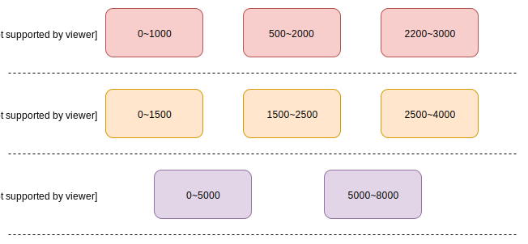

前言
Leveldb 是一个出色的 key-value 存储引擎，它的特点是支持高效的写，同时兼顾一定的读性能。本篇的内容比较零散，都是我在看 leveldb 源码时，觉得一些比较出彩的设计思想，值得学习参考，所以就总结一下。
队列方式处理请求
leveldb 支持多线程的写请求，它处理请求的方式很巧妙。为了保证请求的有序性，leveldb 将请求存到队列里。在保证有序性的基础上，leveldb 为了提高吞吐量，还将请求进行合并然后处理。为了保证这些请求的处理顺序，leveldb 同一时刻只有一个线程负责处理。
|
|
通过锁限制了同时只有一个线程处理请求，每个线程在处理请求时，都会努力的合并请求，请求完成后，使用条件变量通知其它线程。而且还需要观察到队列的有序性，线程的条件判断都是依据队列头部的元素是否是自己的请求。
数据传递方式
请求数据会经过 leveldb 的多次处理，调用多次函数，那么这些数据是已什么方式的传递的。第一种是值传递，这种方式很简单，而且数据互不影响，但是会内存频繁创建和销毁。第二种是引用传递，这种方式对内存的性能很好，但是数据的修改会相互影响。leveldb 采用了第二种，它为了统一数据的表现形式，使用 Slice 类。
|
|
这样无论数据有多大，只需要传递一个指针和长度值就可以了。
文件缓冲区
leveldb 在持久化数据时，都会使用缓冲区来提高写性能。数据首先写入缓冲区，等待缓冲区满了，缓冲区就会刷新到内核空间。这样减少了系统调用，可以提高一定的性能。
|
|
数据校检
当数据被持久化到磁盘里，我们不能保证数据永远是安全的，因为磁盘是由磁盘块组成的，而这些块是有几率被损坏的。所以在磁盘存储数据，一定要有校检的功能来帮助我们及时发现数据被损坏了。一般的校检方式有计算整个文件的 md5 或其它哈希值，这种方法非常简单方便。但是如果只要文件中的一小块发生问题，我们就无法找到具体哪一块损坏了。如果我们将数据切片，计算每个分片的哈希值，然后再存储到文件里，那么我们就可以发现损坏的切片。leveldb 也是采用后面一种方式，采用 crc32 算法计算每个分片的哈希值。crc32 的计算效率相比 md5 高很多。
WAL 机制
我们知道内存相比磁盘来说，性能要好得多，但是价格也要贵。为了提高读写性能，一般将数据优先存放在内存中，数据的读写优先从内存中读取，但是还需要考虑到内存的持久性，也就是断电后内存的数据都会被清空。为了解决这个问题，数据仍然需要先存放在磁盘中。不过为了更大限度的使用磁盘，数据需要以磁盘顺序写的方式存储，这部分数据就是被称为 wal（预写日志）。wal 的作用仅仅是负责恢复内存中丢失的数据（没有来得及写入磁盘），所以 wal 写入只在乎性能。当内存的数据持久化成功后，对应的 wal 也就没有作用了，需要被删除掉。
leveldb 也引入 wal 机制，它先将请求以添加写的方式存到一个文件中，文件名为{number}.log，number 由 leveldb 分配的一个增大的数值。每当内存的数据刷写到磁盘后，会生成一个新的文件{new_number}.log，然后删除旧有的文件（根据文件名的数值判断）。
文件层级设计
每次合并都需要占用大量的磁盘 io 和 cpu 资源，对读写性能都会造成影响。所以 leveldb 为了减少合并次数，采用分层思想来管理。
其中 level 0 层的文件比较特殊，它是由内存刷新到磁盘产生的。因为 leveldb 必须尽快的减少内存使用，所以它会高效率的直接刷新到磁盘，然后将合并的操作放入后台执行。这样 level 0 层的文件的数据范围会有交叉，这就导致了每次读的时候，需要读取这层的所有文件，所以 leveldb 对于这层的文件数量有限制，不能超过 4 个。
对于其余层的文件，它们的数据范围不会有交叉。如下图所示：
合并的原理比较复杂，尤其是 level 0 层的合并。这里举个例子，比如 level 0 层的第一个文件合并，它分为以下三步
第一步：递归的寻找当前层有数据交叉的文件，直到能组成一个独立的数值范围。
level 0 层第一个文件的数值范围是 0 ~ 1000，它首先找到当前层有数据范围交叉的文件，也就是第二个文件（数值范围是 500 ~ 2000）。那么数据范围编程了 0 ~ 2000，根据这个新的范围再重新查找有数据范围交叉的文件，直到没有新增加的文件。
第二步：然后根据上面找到的文件，确定好数值范围，会寻找下一层有数据范围交叉的所有文件。根据范围 0 ~ 2000，可以查找到 level 1 的前两个文件。
第三部：尝试扩充合并文件。根据第二步找到的文件，确定好数值范围，尝试在上一层中合并更多的文件。根据 level 1 的前两个文件，可以确定范围 0 ~ 2500，然后去 level 0 层找到新的文件。这时刚好 level 0 层的第三个文件有范围交叉，但是 2200 ~ 3000 的数值范围和 level 1 中的第三个文件有交叉，而 level 1 的第三个文件是新增的，所以 leveldb 不会合并这个文件。
这样最终这次合并的文件有四个，level 0 层的前两个文件和 level 1 层的前两个文件。这次合并会生成一个新的文件，数值范围是 0 ~ 2500，存储在 level 1 层。
文件稀疏索引
对于每个文件，里面存储了多条数据，而且数据长度都是变长的。leveldb 为了支持快速的查找，为每个数据文件创建了索引，存在文件的末尾。这些索引记录了 key 和对应数据在文件中的位置，不过 leveldb 并没有为每条数据都创建索引，而是每隔一定数量的数据才会创建。这样既兼顾了查找效率，同时也避免了索引过大。